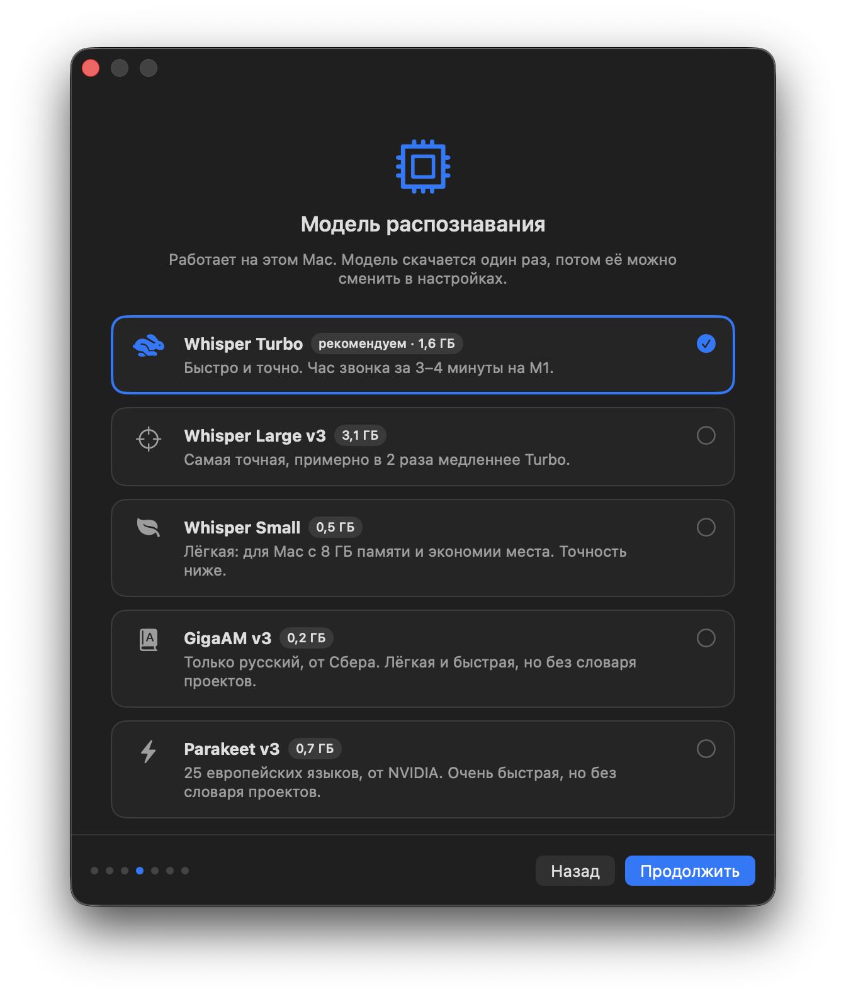
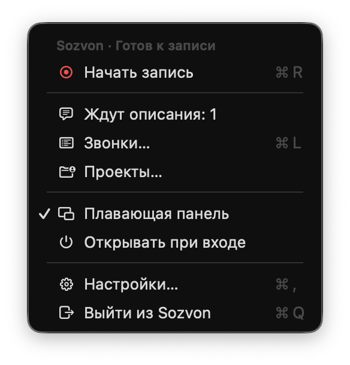

Документация
Всё, что нужно знать, чтобы записывать созвоны и получать из них текст. Если чего-то не хватает, напиши в issues.
Установка
Нужно: Mac на Apple Silicon (M1 и новее), macOS 15 Sequoia или новее, 2-5 ГБ свободного места. Для саммари и поиска проектов дополнительно Claude Code, Codex CLI или Cursor CLI, это необязательно.
- Скачай Sozvon.dmg, открой и перетащи Sozvon в «Программы».
- Запусти. Мастер спросит, как тебя подписывать в расшифровке, на каких языках звонки, какую модель распознавания поставить и кто будет делать саммари.
- Мастер сам поставит движок: Python, модель и разбивку по голосам. Это 5-10 минут и 1-4 ГБ в зависимости от модели. Регистрации и токены не нужны.
- Разреши доступ, когда macOS спросит: «Микрофон» (твой голос), «Запись экрана» и «Запись системного аудио» (голоса собеседников, включая FaceTime). Кнопки для каждого разрешения есть в мастере и в Настройках → Основные → Разрешения. Видео не записывается, только звук. Потом мастер делает пробную запись на три секунды и проверяет, что запись правда работает и слышен ли звук компьютера. Пока мастер не пройден, остальное меню Sozvon недоступно. Доступ к «Напоминаниям» Sozvon спросит, только когда первый раз нажмёшь «В Напоминания».

Если разрешение случайно отклонено, включи его в «Системных настройках», раздел «Конфиденциальность и безопасность», и перезапусти Sozvon.
Запись звонка
Начать запись можно двумя способами:
- Плавающая панель. Висит поверх всех окон, даже над Zoom на весь экран. Нажми на неё, чтобы начать запись. Панель можно перетаскивать: простое перетаскивание запись не запускает.
- Значок в строке меню. Пункт «Записать», во время записи «Остановить».


«Идёт звонок в Zoom. Записать?»
Когда Zoom, Telegram, браузер (Google Meet и другие звонки в браузере), TrueConf, FaceTime, Slack, Teams или другое приложение для звонков держит микрофон дольше 5 секунд, панель спрашивает «Идёт звонок в Zoom. Записать?». «Записать» начинает запись, как обычная кнопка. «Не сейчас» убирает вопрос, пока это приложение не отпустит микрофон, то есть до конца звонка. Если плавающая панель выключена, тот же вопрос с теми же кнопками приходит уведомлением.
Сам Sozvon ничего не записывает: запись начинается, только когда ты нажмёшь «Записать». Отдельных разрешений не нужно: Sozvon видит только, какое приложение сейчас пользуется микрофоном, но не сам звук, и ничего никуда не отправляет. Диктовка, Siri и незнакомые приложения вопрос не вызывают, во время записи его тоже нет. Выключить: «Настройки», «Основные», «Предлагать запись, когда начинается звонок».
Во время записи
Во время записи панель показывает таймер и живую волну двух голосов: твоего микрофона и звука компьютера. Если микрофон молчит слишком долго, панель предупредит «Тебя не слышно»: проверь, что выбран нужный микрофон и он не выключен в самом звонке. Sozvon также предупредит, если громкость входа в системе ниже 50% (её часто убавляют звонки в браузере) или твой голос три минуты почти не слышен.
Без наушников. Через динамики микрофон слышит и собеседников. Перед распознаванием Sozvon убирает это эхо из твоей дорожки прямо на Mac, сверяясь с дорожкой собеседников, а очень тихую дорожку микрофона делает громче. Очищенный голос сохраняется рядом, в mic.clean.m4a, и плеер играет его, так что ты слышишь себя без эха. Исходный mic.m4a не меняется и нужен для повторной расшифровки. С наушниками всё равно лучше всего.
Sozvon не подключается к звонку и не добавляет ботов. Он пишет то, что слышит твой Mac, поэтому работает с любым приложением: Zoom, Google Meet, FaceTime, Telegram, TrueConf, браузер. Предупреждать собеседников о записи твоя ответственность, в разных странах свои правила.
Если выйти из Sozvon во время записи, он сначала аккуратно допишет файлы. Если выйти во время расшифровки, спросит, прервать ли её.
После звонка
После «Стоп» появляется окно «О чём был звонок?». Все поля необязательные, но они заметно улучшают результат:

| Проект | Клиент или команда. Подставляет людей, термины и автозамены проекта. |
| Тема | Попадает в название папки и в заголовок расшифровки. |
| Участники | Собеседники через запятую, по порядку, как начали говорить. Sozvon подсказывает людей с прошлых звонков проекта. |
| Ключевые слова | Имена, продукты и жаргон этого звонка, чтобы модель писала их правильно. |
| Язык | Языки этого звонка, если они отличаются от обычных. |
| Саммари | Делать ли саммари для этого звонка. |
Кнопка «Расшифровать» ставит звонок в очередь. «Позже» закрывает окно и запоминает то, что ты уже ввёл. «Не расшифровывать» просто сохраняет запись, расшифровку можно запустить потом из окна «Звонки».
«Позже»
Если сразу начинается следующий звонок, нажми «Позже» или просто закрой окно. Звонок получает отметку «Ждёт описания» в окне «Звонки», а в меню Sozvon появляется пункт «Ждут описания: N»: он открывает то же окно для самого старого такого звонка. В окне «Звонки» то же делает «Расшифровать…».
Если Sozvon 10 минут ничего не записывает, придёт напоминание с кнопкой «Описать», не чаще раза в час для одного звонка. Во время записи напоминаний нет, и пункт меню скрыт. Звонок ждёт, пока ты его не расшифруешь или не нажмёшь «Не расшифровывать».
Что происходит дальше: дорожки выравниваются по времени, из микрофона убирается эхо собеседников, речь распознаётся с подсказкой из проекта, голоса собеседников разводятся, знакомые голоса подписываются сами, остальных помощник подписывает по смыслу разговора и пишет саммари. Час звонка на Whisper Turbo обрабатывается за несколько минут. Когда всё готово, приходит уведомление.
Окно «Звонки»
Открывается из меню. Слева звонки по дням, справа саммари и расшифровка выбранного.

- Поиск ищет по дате, теме, проекту, участникам и по тексту саммари и расшифровок.
- Из меню звонка: открыть папку в Finder, расшифровать заново (например, с другой моделью или исправленными участниками), переместить в корзину.
- Звонок, который сейчас записывается, отмечен «Идёт запись», его нельзя удалить или расшифровать.
- Над саммари карточка с его заметками. «Поделиться» на панели инструментов копирует звонок, открывает расшифровку и отправляет задачи в Напоминания, а «Ещё» расшифровывает заново, показывает папку в Finder, журнал и удаляет звонок.
- «Последняя расшифровка» в меню и уведомление «Расшифровка готова» открывают звонок здесь.
- Звонок, скачанный со своего сервера, приходит со звуком, если его туда отправили: плеер работает. Без звука его можно читать и искать, но не слушать и не расшифровать заново.
Слушать звонок
Внизу окна плеер, на обеих вкладках: «Слушать» и «Пауза», назад и вперёд на 15 секунд, ползунок и скорость 1×, 1,5× или 2×. Нажми на любую реплику, и запись заиграет с этого места. Текущая реплика подсвечивается, а окно само прокручивается за ней. Обе дорожки, твой микрофон и собеседники, звучат вместе и совпадают с таймкодами.
Пока у звонка есть звук, щелчок по реплике включает её, а не выделяет текст. Чтобы скопировать реплику, выбери «Копировать» в её контекстном меню, там же «Слушать отсюда».
Исправить расшифровку
В контекстном меню реплики:
- «Переименовать говорящего…» открывает окно «Кто это говорит?». Под полем подсказки имён: другие говорящие, участники звонка и люди проекта. С галочкой «Во всей расшифровке» новое имя получают все реплики этого человека, список участников в шапке и участники звонка; без неё к этому человеку уходит только реплика, по которой ты щёлкнул. Если такое имя уже говорит в звонке, Sozvon предложит «Поменять местами» (помощник перепутал двух людей) или «Объединить» (это один человек). Когда ты точно называешь собеседника, Sozvon запоминает его голос для проекта.
- «Исправить слово…»: выдели в реплике неверно услышанное слово или фразу и напиши, как правильно. Заменяется только целое слово и только в той реплике, по которой ты щёлкнул. Потом Sozvon спросит «Запоминать для проекта «Acme»?» (или «Запоминать для всех звонков?», если у звонка нет проекта). «Запоминать» добавляет автозамену, и в новых расшифровках это слово сразу будет написано правильно.
Правки меняют transcript.md и transcript.txt. Саммари само не переписывается: над ним появляется полоса «Расшифровку правили после саммари» с кнопкой «Обновить саммари», тот же пункт есть в меню «Ещё». Переписывается только саммари, заново ничего не расшифровывается. Пока звонок записывается или расшифровывается, править его нельзя. Если есть свой сервер, исправленный звонок уходит туда заново.
Импортировать запись
Старую запись можно расшифровать так же, как новую: перетащи файл в список звонков или нажми «Импортировать запись…» в панели инструментов. Подходят m4a, mp3, wav, aac, flac, а также видео mp4 и mov (берётся только звук). webm, ogg, opus, oga и mkv Sozvon не принимает, их сначала нужно сконвертировать в m4a, mp3 или wav.
Sozvon создаёт новую папку звонка с датой записи из метаданных файла (если её нет, с датой самого файла), сохраняет звук как system.m4a и открывает «О чём был звонок?», как после записи. Твоего микрофона отдельной дорожкой здесь нет, поэтому все голоса, включая твой, разводятся по голосам и подписываются по смыслу. Если выбрать несколько файлов, они импортируются по очереди, окно откроется для последнего, а остальные ждут в списке с кнопкой «Расшифровать…».
В Напоминания
Пункт «В Напоминания» в меню «Поделиться» на панели инструментов звонка есть, когда в саммари есть задачи или у звонка есть заметки. В окне уже отмечены твои незакрытые задачи (по имени из настроек или «я», «вы»). Чужие задачи и заметки можно отметить самому, чужая задача попадёт в Напоминания с именем: «Анна: отправить договор».
Срок ставится, только если день назван ясно: «завтра», «в пятницу», «10 ноября» считаются от даты звонка. Если сказано расплывчато, срока не будет: лучше без даты, чем с неверной. «Список»: «По умолчанию» или «Sozvon» (такой список Sozvon создаст сам). В каждом напоминании тема и дата звонка и ссылка на его саммари.
Доступ к «Напоминаниям» macOS спросит при первом добавлении. Задачи попадают в приложение «Напоминания» на этом Mac, Sozvon ничего никуда не отправляет. Если Напоминания на этом Mac синхронизируются через iCloud, дальше их синхронизирует Apple.
Отметить важное
Во время записи на панели есть звёздочка. Нажми её, пункт «Отметить важное» в меню или ⌃⌥I в любом приложении, даже в Zoom на весь экран, и Sozvon запомнит этот момент. Счётчик рядом со звёздочкой показывает, сколько моментов отмечено. Клавиши работают только пока идёт запись.
В расшифровке отмеченная реплика получает звёздочку и жёлтую подсветку, а в саммари появляется раздел «Важные моменты»: время и что там сказали или решили.
Если пропал звук
Панель сразу пишет «Тебя не слышно» или «Их не слышно», если звук пропал. Если микрофон выдаёт только цифровую тишину (отвалились наушники, сменилось устройство) или от собеседников две минуты нет звука, Sozvon сам заново подхватывает этот источник, не прерывая вторую дорожку. Если и через полминуты тихо, придёт уведомление с кнопкой «Настройки звука». Обычная тишина в комнате тревогу не поднимает.
Тема и участники из Календаря
После «Стоп» окно «О чём был звонок?» заполняется по встрече в Календаре, которая шла в момент записи: тема из названия встречи, участники из приглашённых, проект, если название или люди совпадают с одним из проектов. Встреча со ссылкой на Zoom, Meet или Teams важнее обеда в то же время. Заполняются только пустые поля: что ты ввёл во время записи, не меняется.
Доступ к Календарю macOS спросит при первом таком окне. Календарь читается только на этом Mac. Выключить: «Настройки», «Основные», «Название и участники из Календаря».
Автоудаление аудио
«Настройки», «Основные», «Автоудаление аудио»: никогда (по умолчанию), через неделю, 15, 30 или 60 дней. У расшифрованных звонков старше этого срока удаляется только звук, расшифровка, саммари и заметки остаются. У таких звонков пропадают плеер и «Расшифровать заново». Со своего сервера звук этих звонков тоже удаляется. Если после смены настройки звук удалится сразу, Sozvon сначала покажет, у скольких звонков и сколько места освободится.
Заметки
К звонку можно оставить заметку: решение, договорённость, уточнение на потом. Свою добавляешь кнопкой «Добавить» в карточке «Заметки» в окне «Звонки», а удаляешь кнопкой «⋯» рядом с заметкой. Claude Code, Codex и Cursor оставляют заметки инструментом add_note, а Claude и ChatGPT на телефоне делают то же через свой сервер.
- У каждой заметки видно дату и кто её добавил: ты, Claude, Codex, Cursor или ChatGPT.
- Заметку нельзя изменить, но можно удалить: кнопка «⋯» рядом с ней, пункт «Удалить заметку». Ассистент тоже может удалить заметку, если попросишь (
delete_note). - Заметки находят поиск в окне «Звонки»,
search_callsиget_call. - Заметки лежат в
call.jsonзвонка и синхронизируются со своим сервером в обе стороны. Удалённая заметка не вернётся с другого Mac. - До 4000 символов в заметке и до 200 заметок на звонок.
Проекты
Проект хранит то, что помогает распознаванию в звонках с одним клиентом:
- Люди. Имена участников, подсказываются в окне после звонка и помогают подписать говорящих.
- Термины. Названия продуктов, компаний и жаргон. Whisper получает их как подсказку и пишет правильно.
- Автозамены. Что модель упорно слышит неправильно и как это исправить: «экма» на «Acme».
Проекты редактируются в окне «Проекты» из меню. Люди с размеченных звонков добавляются в проект сами.
Найти проекты автоматически
Кнопка «Найти проекты» просит Claude Code, Codex или Cursor просмотреть твои сессии и заметки и предложить проекты с людьми и терминами. Ты выбираешь, что сохранить. Помощник получает названия папок проектов, заметки памяти и ответы открытых сессий, это уходит в Anthropic, OpenAI или Cursor и выбранной там модели. Claude технически ограничен папкой ~/.claude. У Codex песочница запрещает запись, но не чтение: ограничение папкой ~/.codex только в инструкции. Cursor работает в режиме только для чтения (--mode ask) и смотрит прошлые чаты в ~/.cursor/projects; ограничение этой папкой тоже только в инструкции.
Голоса
Sozvon может узнавать людей по голосу, а не только угадывать имена по смыслу разговора. Так два Александра в одном проекте больше не путаются.
- Твой голос. «Настройки», «Основные», «Мой голос» под именем: «Записать…», прочитай вслух простой текст на экране, 20 секунд. Текст на языке звонков, а не интерфейса; если языков несколько, сверху выбор. Потом в меню «Образец»: «Добавить образец…» дополняет отпечаток ещё одной записью, например на втором языке звонков, а «Перезаписать…» записывает заново.
- Подтвердить голоса. Если после расшифровки все подписаны верно, над саммари и расшифровкой есть строка «Подписи верные? Запомни голоса» с кнопкой «Запомнить голоса». Для одного человека: правый клик по его реплике, «Запомнить голос». У участников с сохранённым голосом в шапке звонка стоит зелёная галочка.
- Голоса собеседников. Когда ты называешь собеседника в звонке («Переименовать говорящего…» или «Поменять местами»), Sozvon сохраняет отпечаток его голоса для проекта. В следующих звонках этого проекта такие голоса подписываются сами, а помощник называет только остальных.
- Кто сохранён. В окне «Проекты» видно, у кого из людей проекта есть голос, там же его можно удалить. «Настройки», «Основные», «Голоса», «Показать…» открывает список всех сохранённых голосов: чей, в каком проекте, сколько речи и когда сохранён. Любой можно удалить, там же «Удалить все…».
Отпечатки голосов относятся к биометрическим данным. Они хранятся на этом Mac и, если включено «Отправлять отпечатки голосов», на твоём сервере в твоём аккаунте Cloudflare, больше нигде. Claude и ChatGPT их не видят. Удаление голоса удаляет его везде: на этом Mac, на сервере и на других Mac.
Модели распознавания
| Модель | Размер | Когда выбирать |
|---|---|---|
| Whisper Turbo | 1,6 ГБ | По умолчанию. Быстро, точно, 99 языков, понимает термины проекта. |
| Whisper Large v3 | 3,1 ГБ | Когда важна каждая фраза и не жалко времени: примерно вдвое медленнее. |
| Whisper Small | 0,5 ГБ | Mac с 8 ГБ памяти. |
| GigaAM v3 | 0,2 ГБ | Только русский. Лучше всех знает русскую речь и очень быстрая, но не использует термины проекта. |
| Parakeet v3 | 0,7 ГБ | 25 европейских языков, быстрая, без терминов проекта. |
Модель меняется в «Настройки», вкладка «Распознавание». Новая модель скачивается один раз. Разбивка по голосам (pyannote, 31 МБ) ставится вместе с приложением для любой модели.
Несколько языков. В «Языках звонков» можно отметить несколько: язык определяется для каждой дорожки. Если собеседники переходят с языка на язык посреди разговора, включи «Язык может меняться посреди речи», тогда язык определяется для каждой фразы, это медленнее на 20-30%.
Саммари
Саммари пишется на языке разговора: коротко о звонке, решения, задачи с исполнителями, открытые вопросы. Его делает помощник, который уже стоит у тебя:
- Claude Code по твоей подписке, по умолчанию модель Sonnet.
- Codex CLI по твоей подписке OpenAI.
- Cursor CLI (
cursor-agent) по твоей подписке Cursor, с моделью, выбранной в Cursor. - Только локально: без саммари и подписи имён, текст расшифровки никуда не уходит.
Помощник выбирается в «Настройки», вкладка «Ассистенты». Если саммари не получилось (нет сети, кончился лимит), расшифровка всё равно сохраняется.
Claude Code, Codex и Cursor (MCP)
Sozvon может отдавать звонки твоему ассистенту: «что решили с Acme на прошлой неделе?», «найди, где обсуждали SLA». Пока Sozvon запущен, он держит один общий MCP-сервер на 127.0.0.1:47816 для всех сессий, около 40 МБ памяти. Сервер доступен только с этого Mac и требует пароль (bearer-токен).
Подключить
«Настройки», вкладка «Ассистенты», кнопка «Подключить» рядом с нужным ассистентом. Это всё: в новой сессии Claude Code, Codex или Cursor звонки уже видны. «Отключить» убирает Sozvon из настроек ассистента.
Что происходит под капотом
Один сервер на всех. MCP-сервер запускает само приложение Sozvon, а не каждая сессия ассистента. Если бы каждая сессия поднимала свою копию, десять открытых сессий держали бы десять Python-процессов. Общий сервер занимает около 40 МБ, ассистенты подключаются к нему по адресу http://127.0.0.1:47816/mcp. Сервер живёт, пока запущен Sozvon, и завершается вместе с ним.
Зачем пароль. Адрес 127.0.0.1 недоступен из сети, но на самом Mac к нему может обратиться любая программа: приложение из App Store в песочнице (ему нельзя читать ~/Documents, а ходить на localhost можно), процессы других пользователей этого Mac. Без пароля такая программа прочитала бы все расшифровки, а через инструмент transcribe заставила бы Sozvon прочитать любой твой файл. Поэтому при первом запуске Sozvon создаёт случайный пароль (32 байта) в ~/Library/Application Support/Sozvon/.mcp-token с правами только для тебя, и сервер отвечает лишь на запросы с ним. Заодно сервер проверяет заголовки Host и Origin, чтобы до него не добрался сайт в браузере.
Что делает кнопка «Подключить». Для Claude Code она выполняет
claude mcp add --scope user --transport http sozvon http://127.0.0.1:47816/mcp \
--header "Authorization: Bearer $(cat ~/Library/Application\ Support/Sozvon/.mcp-token)"Для Codex выполняет codex mcp add sozvon --url http://127.0.0.1:47816/mcp и дописывает пароль в секцию [mcp_servers.sozvon] файла ~/.codex/config.toml:
http_headers = { "Authorization" = "Bearer <пароль>" }У Cursor нет команды mcp add, поэтому Sozvon сам дописывает запись первой в "mcpServers" файла ~/.cursor/mcp.json. Комментарии и другие серверы в файле остаются как были. Этот же файл читают и приложение Cursor, и Cursor CLI. Если файл не получается разобрать, Sozvon его не трогает и предлагает скопировать запись:
"sozvon": {
"url": "http://127.0.0.1:47816/mcp",
"headers": { "Authorization": "Bearer <пароль>" }
}Эти же команды можно выполнить руками, результат будет тот же. Кнопка с двумя листками рядом с «Подключить» копирует готовую команду с паролем. Другой MCP-клиент подключается так же: HTTP-адрес выше и заголовок Authorization: Bearer <пароль>.
Инструменты
list_calls | Список звонков: id (дата и время), тема, проект, люди, длительность, есть ли саммари, сколько заметок. Фильтр по любому тексту. |
get_call | Саммари, расшифровка или и то и другое по id звонка, и заметки к нему. |
search_calls | Поиск по всем расшифровкам, саммари и заметкам, с таймкодами: лучшие совпадения сверху, находит слова в любой форме, в also принимает 2-3 альтернативные формулировки: речь записана так, как её сказали, поэтому ассистент ищет и другими словами. |
add_note | Оставить заметку к звонку: решение, договорённость, уточнение. Видна в окне «Звонки». |
delete_note | Удалить заметку звонка по её id, который показывает get_call. Удаление доходит до своего сервера и других маков. |
transcribe | Расшифровать любой аудио- или видеофайл, можно с разбивкой по голосам и терминами проекта. |
list_profiles | Проекты. |
add_terms | Добавить термины в проект или общий словарь. |
add_replacement, remove_replacement | Автозамены. |
list_models, show_vocab, preview_prompt | Модели, словарь и то, какую подсказку получит модель. |
То, что ассистент прочитал через MCP, уходит в Anthropic, OpenAI или Cursor вместе с твоим вопросом, как любой другой контекст сессии.
Свой сервер: звонки с телефона
Необязательно. Если хочется спросить Claude или ChatGPT о звонке с телефона, когда Mac далеко, Sozvon может держать копии расшифровок на твоём собственном сервере. Это сделано ради твоей безопасности и приватности: каждый поднимает свой сервер в своём аккаунте Cloudflare (бесплатного тарифа хватает), поэтому звонки не попадают ни к нам, ни в какой-то общий сервис. Мы не видим твои данные, а удалить их все можно в любой момент.
Что уходит: расшифровки, саммари, заметки и данные звонка (дата, тема, проект, участники) только законченных звонков. Кроме того, на вкладке «Облако» два переключателя, оба включены по умолчанию:
- «Отправлять аудио звонков». Звук хранится частями в твоей базе D1, чтобы новый Mac получил звонки вместе с записью. Бесплатного тарифа хватает примерно на 80 часов звонков. Дальше сервер не принимает новый звук, синхронизируется только текст, и Sozvon об этом скажет. Звук удалённых звонков и звук, удалённый автоудалением, освобождает место.
- «Отправлять отпечатки голосов». Голоса, чтобы другие Mac узнавали тех же людей.
Распознавание всё равно идёт на Mac: звук уходит только на твой сервер и только с включённым переключателем. Claude и ChatGPT через коннектор никогда не получают звук и голоса, только текст.
Что могут ассистенты. Смотреть список звонков, читать и искать их (тем же ранжированным поиском, что и на Mac) и добавлять заметки. Менять или удалять звонки и заметки они не могут.
Честно об ограничениях. Текст не зашифрован end-to-end: серверу нужно его читать, чтобы искать. Его видит твой аккаунт Cloudflare, а когда помощник читает звонок, текст уходит в Anthropic или OpenAI, как любой контекст разговора. Согласие собеседников на запись и хранение на тебе. Со звуком и голосами в твоём аккаунте Cloudflare хранятся и чужие голоса, за них и за согласие этих людей отвечаешь ты.
Настройка в два шага
- В Sozvon открой «Настройки», вкладку «Облако», нажми «Подключить Cloudflare» и в браузере «Разрешить» (бесплатного аккаунта Cloudflare хватает, его можно завести там же). Sozvon сам создаст базу, загрузит сервер в твой аккаунт, придумает надёжный пароль и синхронизирует звонки: отправит свои и скачает те, что уже есть на сервере. Дальше каждый новый звонок уходит после расшифровки. Если разрешил несколько аккаунтов, Sozvon спросит, в какой ставить. После «Разрешить» браузер сам вернёт тебя в Sozvon (в первый раз он спросит «Открыть Sozvon?»).
- Подключи ассистента. Адрес коннектора и пароль на той же вкладке, у каждого кнопка копирования.
- Claude: нажми «Открыть Claude». Адрес уже в буфере, откроется окно добавления коннектора (claude.ai/customize/connectors): вставь адрес, назови Sozvon, добавь и войди паролем. Коннектор сразу работает и в приложениях Claude для телефона и компьютера. В тарифах Team и Enterprise свои коннекторы может понадобиться разрешить владельцу.
- ChatGPT: нажми «Открыть ChatGPT» и добавь адрес как свой MCP-сервер с входом через OAuth, потом войди паролем. Нужен платный тариф ChatGPT, точный путь в меню в docs/SERVER.md.
Какие права просит Sozvon: чтение настроек аккаунта (узнать его имя и адрес workers.dev), запись в D1 (база звонков), Workers Editor и Workers Admin (загрузить сервер; без Admin Cloudflare не даст создать новый Worker) и Workers KV (сессии входа Claude и ChatGPT и копия пароля для других Mac). Доступ нужен только на время настройки: Sozvon держит его только в памяти и забывает, как только настройка закончится. Отозвать разрешение можно в Cloudflare: My Profile, Access Management, список авторизованных приложений (прямая ссылка), кнопка Revoke. Сервер после этого продолжит работать.
Обновление. Когда в новой версии Sozvon есть новый сервер, на вкладке появляется «Обновить сервер»: войди в Cloudflare ещё раз, и Sozvon загрузит новую версию. Звонки, пароль и коннекторы остаются как были. После обновления Sozvon один раз нажми «Обновить сервер»: синхронизация звука и голосов нужна серверу 0.4.0.
Вручную. Можно поднять сервер и без кнопки: кнопкой Deploy или через wrangler по docs/SERVER.md, а потом вставить адрес и пароль в разделе «Свой адрес» на той же вкладке.
Подробности, лимиты бесплатного тарифа и удаление сервера: docs/SERVER.md на GitHub.
Синхронизация между Mac
Свой сервер заодно связывает несколько Mac. Подключи тот же сервер на втором Mac («Подключить Cloudflare» в том же аккаунте или адрес и пароль вручную), и Sozvon скачает все звонки, которых там нет: текст, саммари, заметки и звук, если его отправляли, так что плеер работает. Голоса тоже приходят, и второй Mac узнаёт тех же людей.
- Новые звонки уходят на сервер после расшифровки, остальные Mac забирают их при следующей синхронизации. Синхронизировать сразу можно кнопкой «Синхронизировать» на вкладке «Облако».
- Заметки идут в обе стороны: оставленные Claude или ChatGPT на сервере приходят в окно «Звонки», твои уходят на сервер.
- Удаление только из Sozvon. С сервера удаляются только звонки, которые ты удалил в Sozvon (в корзину из окна «Звонки»). Звонок, которого просто нет в папке, сервер не трогает, а скачивает обратно. Поэтому удаляй звонки в Sozvon, а не в Finder.
- Удалённый на одном Mac звонок на других переносится в Корзину macOS, оттуда его можно вернуть. Отмена удаления в Sozvon возвращает звонок и на сервер. Звонок, который сейчас записывается или расшифровывается, ждёт следующей синхронизации.
- Если звонок не отправился, остальные всё равно синхронизируются, на вкладке «Облако» видно «Не отправились: N», а следующая синхронизация попробует снова.
- Пароль на новом Mac. «Подключить Cloudflare» кладёт копию пароля сервера в хранилище KV самого сервера (
sozvon-oauth, ключsozvon:password) в твоём аккаунте Cloudflare. Сам сервер этот ключ не читает и никому не отдаёт. На новом Mac «Подключить Cloudflare» берёт эту копию, и если сервер её принимает, коннекторы Claude и ChatGPT остаются подключёнными. Если нет, Sozvon ставит новый пароль и пишет, что в коннекторах нужно войти ещё раз. У сервера, поднятого кнопкой Deploy или черезwrangler, копии нет, поэтому первое подключение из приложения один раз сменит пароль. Если вводишь адрес вручную, пароль сам не подставится: введи оба, Sozvon проверит их по Enter или «Сохранить».
Настройки
| Основные | «Профиль»: как тебя подписывать в расшифровке и язык интерфейса. «Запись»: плавающая панель, показывать её и без записи, «Предлагать запись при звонке» (вопрос «Записать?», включено по умолчанию), «Предупреждать о тишине», звук при старте и остановке. «Голоса»: твой голос («Записать заново…», «Добавить образец…») и голоса собеседников («Управлять…»: список, удаление по одному или всех). «После звонка»: тема и участники из Календаря, автоудаление аудио. «Обновления»: проверка и версия. |
| Распознавание | «Модель»: модель распознавания, языки звонков, смена языка посреди речи. «Производительность»: расшифровка с низким приоритетом, чтобы Zoom, браузер и сборки не тормозили. «Движок»: состояние Python, модели и MCP-сервера с кнопкой «Проверить», последняя ошибка с журналом. «Файлы»: папка записей, папка данных, «Переустановить…». |
| Ассистенты | Помощник для саммари, подключение Claude Code, Codex и Cursor по MCP, команда для терминала, если подключаешь вручную. |
| Облако | «Подключить Cloudflare» для своего сервера, «Обновить сервер», адрес коннектора и пароль, кнопки «Открыть Claude» и «Открыть ChatGPT», «Отправлять аудио звонков» и «Отправлять отпечатки голосов», состояние синхронизации, раздел «Свой адрес» для сервера, поднятого вручную. |
Приватность: что уходит в сеть
Ни телеметрии, ни своих серверов. Вот полный список.
| Что | Куда |
|---|---|
| Запись, расшифровка, удаление эха, разбивка и отпечатки голосов | Никуда. Только этот Mac: папка ~/Documents/Calls и данные Sozvon |
| Модели и Python-окружение | PyPI, huggingface.co, github.com, один раз при установке |
| Текст расшифровки для саммари и имён | Anthropic, OpenAI или Cursor, только если выбран помощник |
| То, что читает ассистент через MCP | Anthropic, OpenAI или Cursor, только когда ты его спрашиваешь |
| Поиск проектов: названия папок, заметки, ответы сессий. Claude читает только ~/.claude, песочница Codex запрещает запись, но не чтение | Anthropic, OpenAI или Cursor, только по кнопке |
| Проверка новой версии | api.github.com раз в сутки, отключается |
| Расшифровки, саммари, заметки и данные звонков, чтобы Claude или ChatGPT отвечали с телефона. Звук и отпечатки голосов, чтобы другие Mac их получили (ассистенты их не видят), если не выключено на вкладке «Облако» | Твой собственный сервер в твоём аккаунте Cloudflare, не к нам. Только если ты его поднял |
| Вход в Cloudflare и настройка своего сервера | dash.cloudflare.com и api.cloudflare.com, только по кнопке «Подключить Cloudflare» или «Обновить сервер» |
Весь код открыт. Каждый коммит проверяют Gitleaks, Semgrep и CodeQL: секреты, уязвимости, подозрительный код.
Где лежат файлы
Каждый звонок это папка в ~/Documents/Calls (меняется в настройках), например 2026-11-04 15-01 · Acme · запуск · Анна:
mic.m4a, system.m4a | Твой микрофон и звук компьютера, отдельными дорожками. У импортированной записи только system.m4a. |
transcript.md, .txt | Расшифровка: кто что сказал, с таймкодами. |
summary.md | Саммари, если было. |
call.json | Данные звонка: проект, люди, тема, статус, заметки. |
process.log | Журнал расшифровки. |
Это обычные файлы: их можно читать, переносить, класть в заметки. Движок, модели, проекты и голоса (папка voices) лежат в ~/Library/Application Support/Sozvon. Как устроено взаимодействие приложения и движка, описано в CONTRACT.md.
Если что-то не так
«В записи нет звука»
Проверь разрешения «Микрофон», «Запись экрана» и «Запись системного аудио» в Настройках Sozvon → Основные → Разрешения или в Системных настройках, затем перезапусти Sozvon. Если в звонке ты был в наушниках с отдельным микрофоном, убедись, что macOS использует именно его.
«Cloudflare сейчас не отвечает (код 503)»
Это временный сбой на стороне Cloudflare: Sozvon уже сам повторил запрос. Подожди несколько минут и нажми «Подключить Cloudflare» или «Обновить сервер» ещё раз, твой сервер и звонки при этом не страдают. Если не проходит час и больше, в ~/Library/Logs/Sozvon/cloudflare.log есть номер запроса (cf-ray) для поддержки Cloudflare.
В расшифровке «ДИНАМИЧНАЯ МУЗЫКА» и подобное
Так Whisper иногда подписывает паузы и шум, он учился на субтитрах. Sozvon убирает такие пометки сам; если в старой расшифровке они остались, нажми «Ещё», «Расшифровать заново…».
Mac тормозит во время расшифровки
Включи «Расшифровывать с низким приоритетом» на вкладке «Распознавание». Расшифровка станет чуть дольше, зато не будет мешать.
«Движок сломан» или «Модель не скачана»
«Настройки», вкладка «Распознавание», «Переустановить…»: выбери модель и нажми «Переустановить». Записи при этом не трогаются.
«Этот формат macOS прочитать не может»
Импорт не принимает webm, ogg, opus, oga и mkv. Их сначала сконвертируй в m4a, mp3 или wav, например ffmpeg -i call.webm call.m4a, и импортируй снова.
«Нет доступа к Напоминаниям»
Включи Sozvon в «Системных настройках», раздел «Конфиденциальность и безопасность», «Напоминания» (туда ведёт кнопка «Открыть настройки» рядом с сообщением), и нажми «Добавить» ещё раз.
Ассистент не видит звонки
Sozvon должен быть запущен. В разделе «Движок» на вкладке «Распознавание» видно, работает ли MCP-сервер, там же кнопка «Проверить». Переподключи ассистента на вкладке «Ассистенты» и перезапусти сессию.
«Cloudflare не дал доступ»
В сообщении видно, какой запрос не прошёл и что ответил Cloudflare. Обычно не отмечено какое-то право: нажми «Попробовать ещё раз» и на странице Cloudflare разреши всё. Ошибки запросов к Cloudflare пишутся в ~/Library/Logs/Sozvon/cloudflare.log (без токенов и паролей).
«Сервер загружен, но пока не отвечает»
Новому адресу workers.dev иногда нужна минута. Попробуй ещё раз чуть позже: Sozvon возьмёт уже созданные базу и сервер, ничего не задвоится.
Вход в коннектор: «This authorization expired or was already used»
Страница входа открыта по старой ссылке, обновлена или отправлена дважды. Начни подключение в Claude или ChatGPT заново.
«Сервер не принял пароль»
Пароль на сервере сменился. Введи текущий в разделе «Свой адрес» на вкладке «Облако». После 10 неверных попыток с одного адреса сервер не пускает 15 минут.
Журналы
process.logв папке звонка: расшифровка.~/Library/Logs/Sozvon/recorder.log: запись звука.~/Library/Logs/Sozvon/cloudflare.log: неудачные запросы к Cloudflare при «Подключить Cloudflare».~/Library/Application Support/Sozvon/setup.logиmcp.log: установка и MCP-сервер.
Если не помогло, открой issue и приложи нужный журнал. В журналах нет текста звонков, но проверь перед отправкой.
Удаление
- Если подключал ассистентов:
claude mcp remove sozvon --scope user,codex mcp remove sozvon, а для Cursor убери запись"sozvon"из~/.cursor/mcp.json. - Выйди из Sozvon и перетащи его из «Программ» в корзину.
- Удали движок и модели: папку
~/Library/Application Support/Sozvonи журналы~/Library/Logs/Sozvon.
Записи в ~/Documents/Calls остаются, удали их сам, если они не нужны.
Если поднимал свой сервер:
- В Cloudflare удали Worker
sozvon(Workers & Pages), базу D1sozvonсо всеми звонками, звуком и голосами (Storage & Databases, D1) и пространство KVsozvon-oauth(в нём же лежит копия пароля сервера). Или командамиwranglerиз docs/SERVER.md. - Отзови доступ Sozvon в Cloudflare: My Profile, Access Management, список авторизованных приложений (прямая ссылка), Revoke.
- Удали коннектор Sozvon в настройках коннекторов Claude или ChatGPT.
Сборка из исходников
Нужны Xcode 26 и uv. По желанию Node.js 22 или новее: без него приложение соберётся, но без сервера внутри, и «Подключить Cloudflare» будет недоступна.
git clone https://github.com/Able1991/sozvon && cd sozvon
./test.sh # тесты движка, переводов, сервера (при Node.js 22+) и приложения
./build.sh install # ~/Applications/Sozvon.app
./build.sh dmg # build/Sozvon.dmgУстройство проекта описано в README, подпись и выпуск релизов в SIGNING.md.